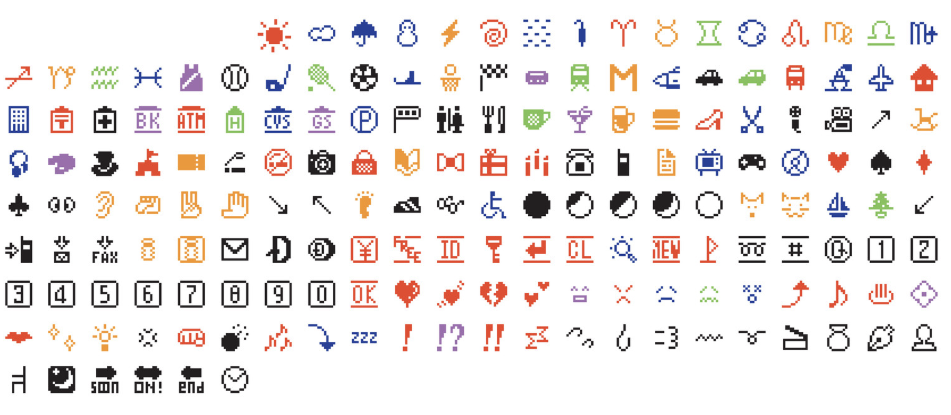

I picked this object because I thought it was a bit funny to think about emojis being in an art museum. Back in 1999, a Japanese phone company called NTT DOCOMO released the first ever set of emojis (176 of them), all designed by one guy named Shigetaka Kurita. Each one was drawn on a tiny 12x12 pixel grid since that was all the screen space he had to work with. He pulled ideas from manga, an old typeface called Zapf Dingbats, and the text emoticons people were already using. MoMA ended up acquiring the whole set in 2016 and put them on display, which is ironic because they started out as a way to save space in text messages.
Object page: moma.org/collection/works/196070
Collection page: moma.org/collection/terms/design